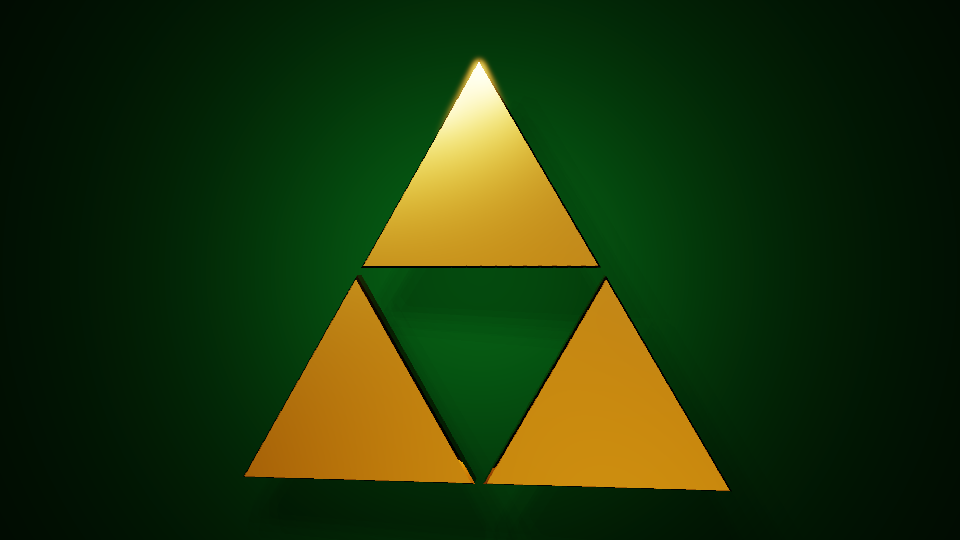
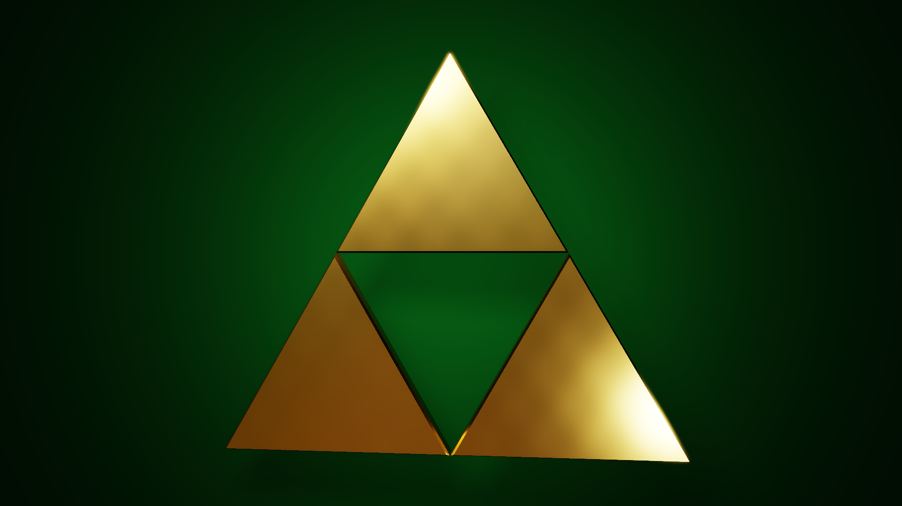
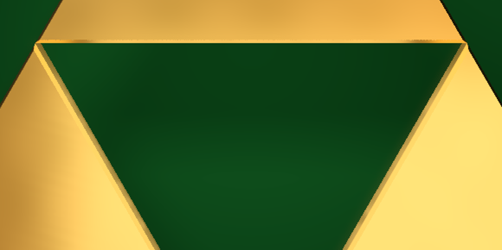
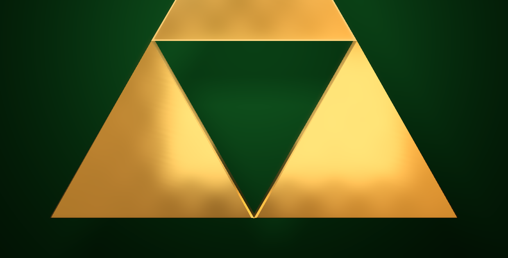

Connected geometry
The three pieces share exact coordinates at their junctions. Bevels shape the highlight response without closing the inverted triangular void at the centre.
03 / RENDERING ENGINEERING
A CPU renderer transformed into a physically based Triforce showcase through geometry, metallic shading, HDR sampling and performance engineering.
Independent rendering engineering project · Completed September 2026

/ OVERVIEW
I developed an existing CPU ray tracer into a focused look-development renderer and used the Triforce as its final test scene. The symbol is built from three connected triangular prisms around true negative space, with shared points, closed geometry and bevels that catch light along the edges.
The final material uses a Cook–Torrance model with GGX distribution, Schlick Fresnel and Smith masking. An EXR environment supplies reflections and image-based light while a separate dark green backdrop keeps the composition graphic and controlled.
The three pieces share exact coordinates at their junctions. Bevels shape the highlight response without closing the inverted triangular void at the centre.
Roughness, Fresnel response, area lights and HDRI reflections were tuned together so the gold reads as a material rather than a flat yellow surface.
The optimized kernel keeps the original reference path for comparison while accelerating primary rays, shadows, recursive reflections and environment sampling.
/ FINAL VALIDATION
The final 1920 × 1080 image rendered in 258.8 seconds with 40 shadow samples, 20 GGX samples, 20 HDRI samples and four bounces. The speed comparison used the report's low-quality 320 × 180 benchmark: approximately 0.3 seconds compiled versus 22.6 seconds on the scalar reference path.

The first pass exposed the need for solid depth, shared geometry and more controlled reflections.

HDR environment sampling gave the metal readable variation before the final material and framing pass.

A close check of bevel continuity, contact and the clean edge around the central negative space.

Specular highlights reveal the relationship between the connected faces and rounded bevels.
Independent project by Joshua Medina. The renderer, scene construction, shading, sampling, optimization, validation and final look development were produced for this project.
The Triforce and The Legend of Zelda are properties of Nintendo. This independent educational rendering study is unaffiliated with and not endorsed by Nintendo.
The optimized backend is specialized for this scene, uses coarse per-mesh bounds instead of a global SAH BVH, has no OBJ or glTF import, and does not yet implement full global-illumination path tracing.